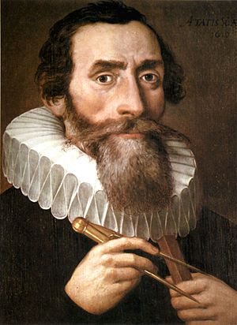

¿Qué es la Física?
La física es una ciencia natural que estudia la materia, la energía y las interacciones entre ambas. Su objetivo principal es entender cómo funciona el universo a nivel fundamental y describir las leyes que rigen el comportamiento de los objetos y fenómenos en la naturaleza.
Johannes Kepler (1571-1630)
Contribuciones: Kepler es conocido por sus tres leyes del movimiento planetario. Sus leyes describen la órbita elíptica de los planetas alrededor del Sol, la relación entre el período orbital de un planeta y su distancia al Sol, y la relación entre el área barrida por un planeta y el tiempo. Estas leyes sentaron las bases para la teoría de la gravitación de Newton.
Evangelista Torricelli (1608-1647)
Contribuciones: Torricelli es famoso por inventar el barómetro y por sus trabajos en la dinámica de fluidos. Su experiencia con el barómetro le permitió demostrar la existencia de la presión atmosférica. También desarrolló la ecuación de Torricelli, que describe la velocidad de un fluido que escapa de un agujero en un recipiente.

Isaac Newton (1643-1727)
Contribuciones: Newton formuló las leyes del movimiento y la ley de la gravitación universal. Sus tres leyes del movimiento describen la relación entre un objeto y las fuerzas que actúan sobre él. La ley de la gravitación universal establece que todos los cuerpos en el universo atraen a otros con una fuerza que es proporcional al producto de sus masas e inversamente proporcional al cuadrado de la distancia entre ellos. También hizo importantes contribuciones a la óptica y al cálculo.
Albert Einstein (1879-1955)
Contribuciones: Einstein es famoso por su teoría de la relatividad, que incluye la relatividad especial y la relatividad general. La relatividad especial introduce la famosa ecuación que muestra la equivalencia entre masa y energía. La relatividad general es una teoría de la gravitación que describe la gravedad no como una fuerza, sino como una curvatura del espacio-tiempo. Einstein también hizo importantes contribuciones a la teoría cuántica, incluida la explicación del efecto fotoeléctrico.
Daniel Bernoulli (1700-1782)
Contribuciones: Bernoulli es conocido por el principio de Bernoulli, que establece que en un fluido en movimiento, un aumento en la velocidad del fluido ocurre simultáneamente con una disminución en la presión o en la energía potencial del fluido. Su trabajo en dinámica de fluidos y en la teoría del flujo turbulento es fundamental para la comprensión moderna de estos fenómenos.
James Prescott Joule (1818-1889)
Contribuciones: Joule es conocido por la ley de Joule, que describe la relación entre la energía eléctrica y la generación de calor. La ley de Joule establece que la cantidad de calor producido por una corriente eléctrica que pasa a través de un conductor es proporcional al cuadrado de la corriente y a la resistencia del conductor. Este trabajo es fundamental para la termodinámica y la teoría de la energía.
Heinrich Hertz (1857-1894)
Contribuciones: Hertz es conocido por sus experimentos que confirmaron la existencia de ondas electromagnéticas, predichas por las ecuaciones de Maxwell. Sus experimentos con osciladores y receptores electromagnéticos demostraron la propagación de ondas de radio y proporcionaron evidencia experimental para la teoría electromagnética.
Hendrik Anton Lorentz (1853-1928)
Contribuciones: Lorentz es conocido por las transformaciones de Lorentz, que son fundamentales en la teoría de la relatividad especial. Estas transformaciones describen cómo las coordenadas espaciales y temporales de un evento cambian para diferentes observadores en movimiento relativo. También hizo importantes contribuciones a la teoría electromagnética y al modelo del electrón.
¿Por qué estudiar Física?
Razones para Estudiar Física Comprensión Fundamental del Mundo: Explicación: La física proporciona una comprensión profunda de cómo funciona el universo, desde las leyes que rigen el movimiento de los planetas hasta las interacciones subatómicas. Ejemplo: Entender por qué los objetos caen y cómo se mueven a través del espacio. Desarrollo del Pensamiento Crítico: Explicación: El estudio de la física fomenta el pensamiento analítico y la resolución de problemas, habilidades útiles en muchas áreas de la vida y en diferentes profesiones. Ejemplo: Resolver problemas complejos mediante la aplicación de modelos matemáticos y conceptos teóricos. Innovación Tecnológica: Explicación: Muchos avances tecnológicos modernos se basan en principios físicos. Estudiar física puede conducir al desarrollo de nuevas tecnologías y a la mejora de las existentes. Ejemplo: La tecnología de semiconductores y los dispositivos electrónicos. Aplicaciones en Otras Ciencias: Explicación: La física es la base de muchas otras ciencias, como la química y la biología. Comprender los principios físicos ayuda a comprender mejor otros campos científicos. Ejemplo: La física de los procesos biológicos, como la mecánica de proteínas y células. Interdisciplinariedad: Explicación: La física se cruza con varias disciplinas, como la ingeniería, la medicina y la informática, ofreciendo oportunidades para colaborar en proyectos multidisciplinarios. Ejemplo: El desarrollo de imágenes médicas utilizando principios de física. Desarrollo de Habilidades Matemáticas: Explicación: La física requiere un sólido entendimiento de las matemáticas, y su estudio refuerza las habilidades matemáticas y el manejo de ecuaciones complejas. Ejemplo: Aplicación de cálculo y álgebra para resolver ecuaciones físicas. Capacitación para Carreras Diversas: Explicación: Los físicos pueden trabajar en una amplia gama de campos, desde la investigación académica hasta la industria y el sector público. La formación en física abre muchas puertas profesionales. Ejemplo: Trabajos en investigación, tecnología, educación y consultoría. Inspiración y Curiosidad: Explicación: La física explora fenómenos fascinantes y misteriosos, lo que puede inspirar a las personas a explorar y descubrir más sobre el mundo que nos rodea. Ejemplo: La curiosidad sobre el origen del universo y la naturaleza de la materia oscura. Contribución al Conocimiento Humano: Explicación: Los avances en física contribuyen al cuerpo de conocimiento humano, ayudando a responder preguntas fundamentales sobre el universo y nuestro lugar en él. Ejemplo: Descubrimientos como las ondas gravitacionales y la estructura del ADN. Capacidad para Resolver Problemas Globales: Explicación: Los principios físicos pueden aplicarse para abordar desafíos globales, como el cambio climático y la energía sostenible. Ejemplo: Investigación en energía renovable y soluciones para reducir las emisiones de gases de efecto invernadero.
Datos curiosos
La Materia Oscura: Curiosidad: Se cree que aproximadamente el 27% del universo está compuesto de materia oscura, una forma de materia que no emite luz ni energía y que no se puede observar directamente, pero su presencia se infiere por sus efectos gravitacionales. El Principio de Incertidumbre de Heisenberg: Curiosidad: Este principio establece que es imposible conocer con precisión simultánea la posición y la velocidad de una partícula subatómica. Cuanto más precisamente tratemos de medir una de estas propiedades, menos precisos serán los valores de la otra. La Velocidad de la Luz: Curiosidad: La velocidad de la luz en el vacío es aproximadamente 299,792 kilómetros por segundo (km/s). Esto significa que la luz de la Luna tarda aproximadamente 1.28 segundos en llegar a la Tierra. Efecto Fotoeléctrico: Curiosidad: El efecto fotoeléctrico, explicado por Albert Einstein en 1905, muestra que la luz puede expulsar electrones de un material. Este fenómeno fue fundamental para el desarrollo de la teoría cuántica y le valió a Einstein el Premio Nobel de Física en 1921. Entrelazamiento Cuántico: Curiosidad: El entrelazamiento cuántico es un fenómeno donde dos partículas se vuelven interdependientes, de modo que el estado de una partícula afecta instantáneamente al estado de la otra, sin importar la distancia entre ellas. Esto desafía la noción clásica de que la información no puede viajar más rápido que la luz. La Teoría de la Relatividad y los GPS: Curiosidad: Los sistemas de posicionamiento global (GPS) deben corregir constantemente los efectos de la relatividad especial y general, ya que los relojes en los satélites GPS y en la Tierra se mueven a diferentes velocidades y experimentan diferentes campos gravitacionales. El Bosón de Higgs: Curiosidad: El bosón de Higgs, también conocido como la "partícula de Dios", fue descubierto en 2012 en el Gran Colisionador de Hadrones (LHC). Este bosón es responsable de conferir masa a otras partículas a través del campo de Higgs. Energía Oscura: Curiosidad: Aproximadamente el 68% del universo está compuesto de energía oscura, una forma de energía que se cree que está impulsando la aceleración de la expansión del universo. El Efecto Casimir: Curiosidad: El efecto Casimir es una fuerza atractiva que surge entre dos placas conductoras cercanas en el vacío debido a las fluctuaciones del campo electromagnético. Es un resultado de la teoría cuántica de campos y ha sido medido experimentalmente. Materia y Antimateria: Curiosidad: En teoría, cada partícula de materia tiene una antipartícula correspondiente con carga opuesta. Cuando una partícula y su antipartícula se encuentran, se aniquilan mutuamente en una explosión de energía. La materia en el universo observable parece ser mucho más abundante que la antimateria.